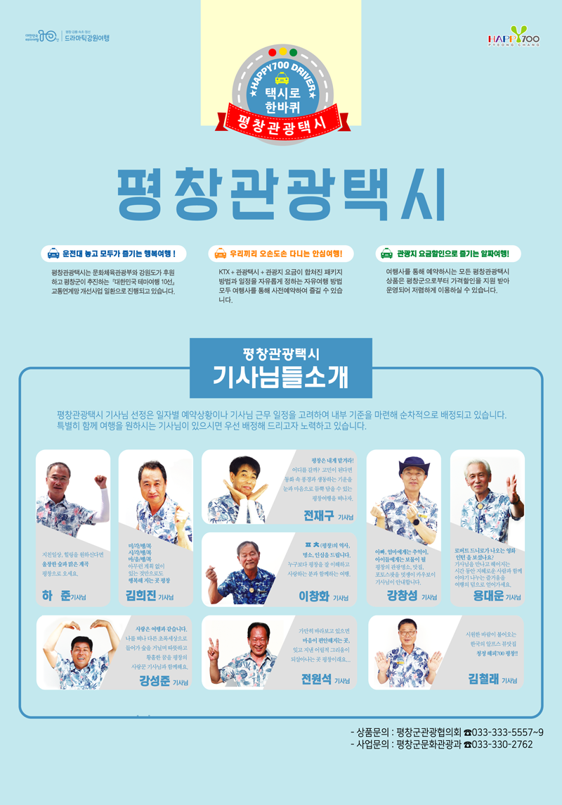
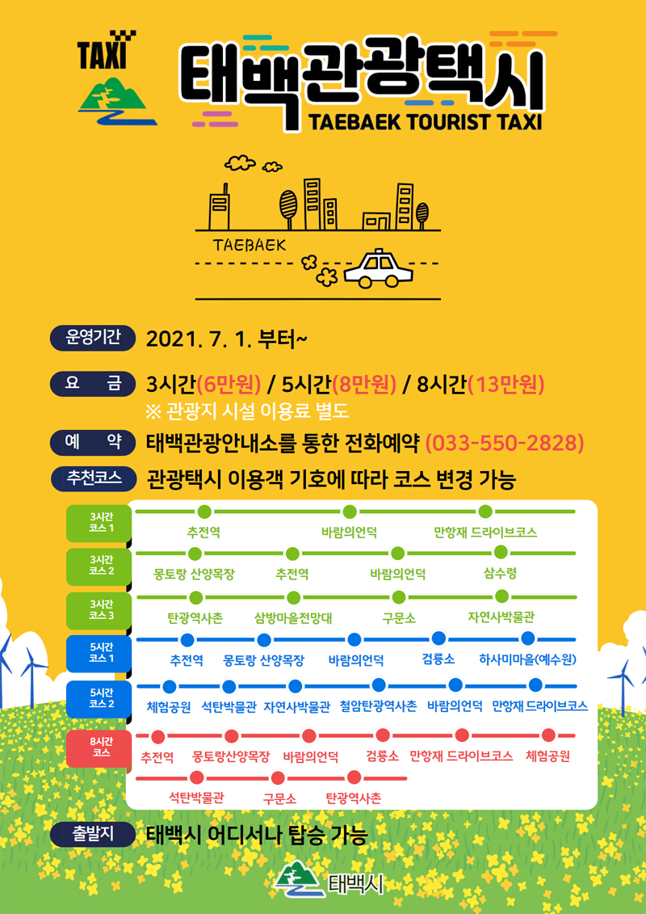
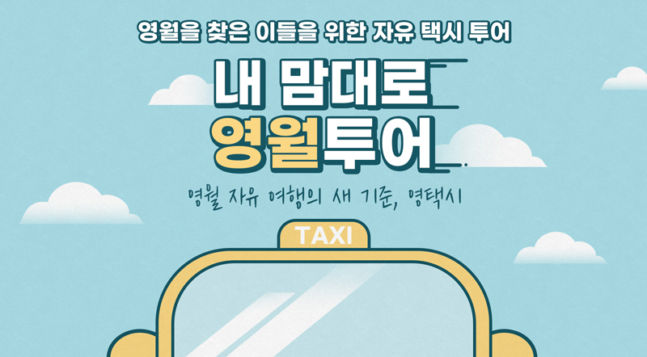

뚜벅이 여행자를 위한 선물, 관광택시
갑자기 어디론가 떠나고 싶은 어느 날, 동네 구석구석을 살펴보는 소소하고 즐거운 나들이.
뚜벅이 여행자를 위한 선물, 관광택시를 소개한다.
<참고 강원네이처로드 매거진>
관광택시 투어 여행지 추천 명소 여행 매거진 - 강원네이처로드

1. 평창 관광택시 (택시로 한바퀴, 평창 관광택시)
(투어패스) https://smartstore.naver.com/koreatourpass
푸르른 평창의 자연을 넓고 편하게 즐길 수 있도록 2019년에 도입되었다.
평창관광택시는 'KTX+관광택시+관광지 요금'이 결합된 패키지와 '자유여행' 방식을 선택하여 이용할 수 있다.
메밀꽃 흩날리는 효석달빛마을부터 하얀 풍력발전기와 푸른 언덕이 이색적인 풍경을 자아내는 대관령 삼양목장까지,
다양한 관광지를 할인된 가격에 즐길 수 있다.

2. 태백 관광택시 (택시를 타고 나만의 여행을 떠나보자! 태백 관광택시)
태백에서는 자가용 없이 기차나 버스 등 대중교통을 이용해 방문해도 저렴한 비용으로 택시를 타고 나만의 관광을 즐길 수 있다.
주중이나 주말을 구분하지 않고 매일 운행하며, 이용시간에 따라 3시간(6만원)/5시간(8만원)/8시간(13만원)으로 구성되어 있다.
운영구간은 주요 관광지로 향하는 기본 6개 추천 코스를 이뤄졌으며, 여행자의 요청에 따라 방문코스를 조정할 수 있다.
관광안내소를 통해 전화로 예약하면 안내소에서 예약자와 관광택시를 연결해 약속 시간과 장소 등을 정하면 된다.

3. 영월관광택시 (현명한 여행자들의 선택! '영택시' 영월관광택시)
https://yeongwoltour.modoo.at
영월관광택시 '영택시'를 부르면 어디든 내가 원하는 곳을 갈 수 있다.
영택시는 영월 주요 관광지를 경유하는 한반도권역, 김삿갓권역, 아웃도어권역, 옛이야기권역, 내맘대로 코스 등 4종의 기본코스와 자유선택형 코스로 이뤄져 있다.
영월의 구석구석을 둘러볼 수 있는 관광택시와 함께 개별·소규모 여행자에게 안전한 여행, 편안한 여행 서비스를 제공한다.
당신의 영월 여행을 더 자유롭고 합리적으로 만들어줄 영택시와 함께 영월로 떠나보자.